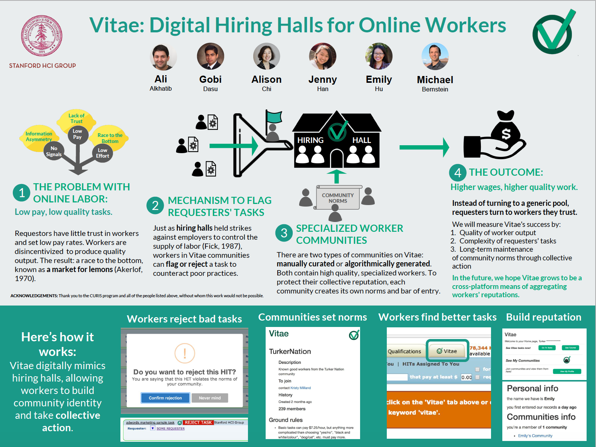

Vitae: Digital Hiring Halls for Online Workers
Workers are increasingly turning toward online freelancing—also known as "gig work"—as a replacement for the tradition 9-5 job. Gig work offers increased flexibility and unparalleled opportunities to gain additional experience and advance one's career. Unfortunately, it is also open to several key drawbacks.
Namely, the online gig economy is entirely unregulated and open to abuse by requestors who post tedious but low-paying tasks for workers. And because workers often must start with accepting low-paying jobs to even get a foot in the door, such bad norms become self-perpetuating. Requestors take advantage of workers' willingness to accept low pay, creating a vicious cycle of poor-quality, low-paying tasks.
We call this problem a market for lemons, based on the economics paper of the same name. As quality norms slip, requestors distrust workers and offer increasingly lower pay. In turn, workers feel less incentive to produce good output.
Enter Vitae. The platform is inspired by historical hiring halls, which helped organize union workers. Our goal is to increase the complexity and payment level of tasks by organizing workers into qualification-based communities. The process of building such communities allows workers to set norms for work quality, marking certain tasks as "unacceptable." Whena a task violates a community's norms, workers can reject tasks—much in the same way that a union goes on strike—and thus cut off the labor supply until the requestor improves the task.
In this way, we hope achieve a continuous virtuous cycle of setting high quality standards and improving treatment for workers.

Above: My poster for the project, presented at the CURIS poster session in September 2017.